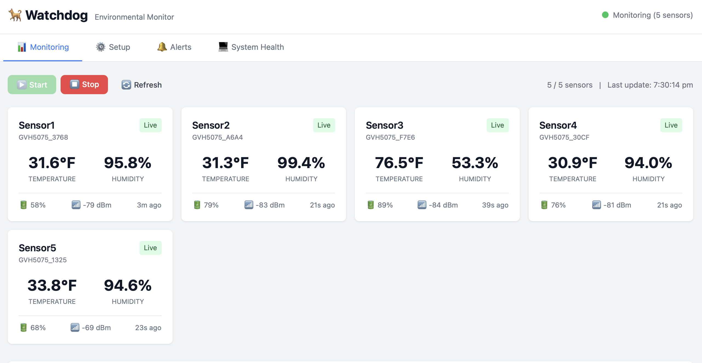
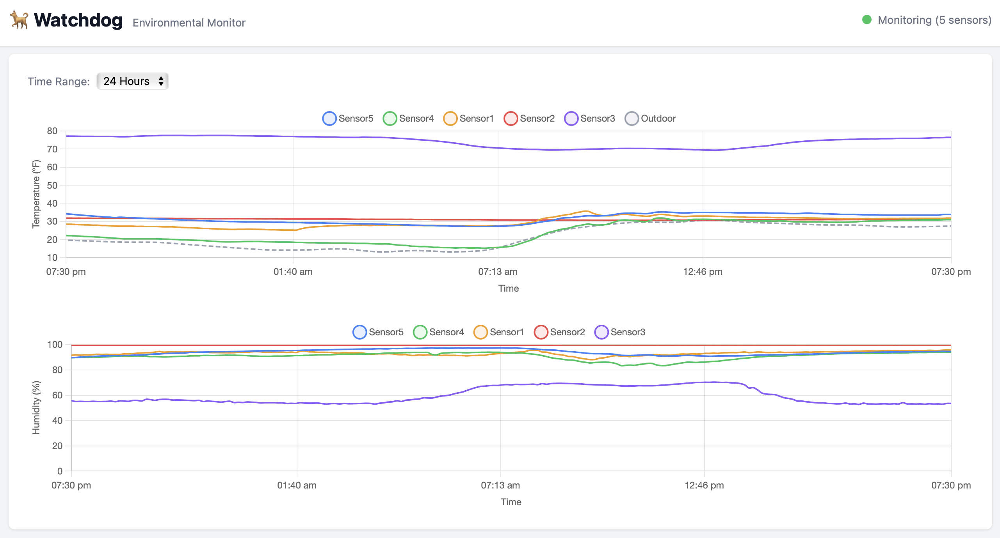
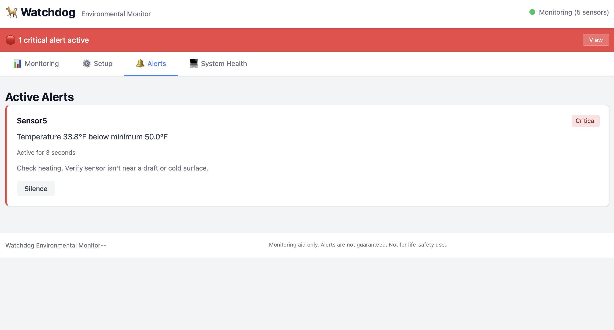

Watchdog is a plug-and-play environmental (temperature and humidity) monitoring appliance built on Raspberry Pi hardware. It uses Bluetooth sensors to track temperature and humidity and sends email alerts when conditions go out of range.
Runs entirely on your local network. No cloud. No subscription.
I built Watchdog because I needed a reliable way to monitor temperature and humidity in environments where conditions actually matter — winter tree storage, plant grow spaces, and equipment areas where environmental drift can cause real damage.
When I started looking at existing monitoring products, I noticed that most were designed around cloud services and mobile apps. That approach works well for many use cases, but it also means the device’s usefulness depends on external infrastructure — internet connectivity, vendor servers, and ongoing software support.
I wanted something that behaved more like an appliance than a gadget: a system that runs locally, continuously collects readings, and alerts you when conditions move outside defined limits, even if the internet is down.
Another principle mattered to me as well. I’ve never liked the modern trend of paying monthly fees for simple software. Call me old-school, but I still prefer the model many of us grew up with in the 1990s: you buy a tool, it runs on your own machine, and it keeps doing its job.
Watchdog was built around those ideas.
Watchdog provides a simple local dashboard that shows live temperature and humidity readings from all connected sensors. Each sensor displays its current measurements along with signal strength and battery status, making it easy to see at a glance whether everything is operating normally.

The interface also includes historical charts that track environmental trends over time. These graphs make it easy to spot gradual changes in temperature or humidity that might otherwise go unnoticed.

Users can define acceptable ranges for temperature and humidity. If conditions move outside those limits, Watchdog immediately sends an email alert so corrective action can be taken.

Sensor health is treated as part of monitoring. If a sensor disconnects or stops reporting, Watchdog surfaces the issue rather than silently ignoring it. The system continuously attempts reconnection so temporary signal interruptions do not require manual intervention.
Everything runs locally on your network. The dashboard is accessible from any device on the same network through a web browser, without requiring cloud services or mobile apps.
Watchdog was designed with a small set of guiding principles. Monitoring systems should continue operating even when internet connectivity is unavailable, so the entire system runs locally on your network without requiring external cloud services.
Failures should be visible rather than silent. If a sensor stops reporting, disconnects, or produces unusual readings, the system treats that condition as something that should be surfaced rather than ignored.
Monitoring software should behave like infrastructure rather than an app. Services are designed to restart automatically and reconnect to sensors so that transient failures do not require manual intervention.
Finally, the device is intended to be owned rather than rented. Once installed, it runs on your network and does not depend on subscriptions or remote services to continue functioning.